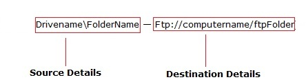
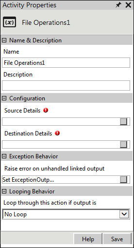

No
Activity description:
The File Operation Activity can be used to perform file transfers from within the workflow. It can be used to transfer files within local networks as well as using HTTP and FTP protocols.
File Transfers Supported:
The list of supported file transfers:
Note: The above examples are in the following format: Source Details — Destination Details

The File Operation activity is not supported if the Source and Destination paths are in the combinations given below:
Variable for getting the list of files that were transferred
The list of files that were transferred using the File Operations activity can be retrieved using a variable of type array, with the following syntax:
^'+CurrentActivity.Name+ 'FilesUploaded'
For example, ^TransferFileOperationFilesUploaded
Variable for getting the list of files that were not transferred
The list of files that were not transferred using the File Operations activity can be retrieved using a variable of type array, with the following syntax:
'^'+CurrentActivity.Name+ 'FilesNotUploaded'
For example, ^TransferFileOperationFilesNotUploaded
Activity Properties:
The File Operation activity has to be configured by specifying appropriate values for the different properties in the Activity Properties area. The Activity Properties can be accessed by clicking on the Activity Properties tool in the Tool Bar or by selecting the appropriate option from the right click menu for the File Operation activity. The Activity Properties are organized under the following groups of related properties. The properties under each group are described in this topic.

File Operations Activity Properties
Name & Description
The properties in the Name & Description group have been described below. You can use these properties to specify the name and description for the activity.
Name - This property can be used to specify a name for the activity.
Property Type: Optional (This property needs to be set only if necessary.)
Description - This property specifies a brief description to be displayed for the activity.
Property Type: Optional (This property needs to be set only if necessary.)
Configuration
The properties in the Configuration group have been described below. You can use these properties to configure the functionality of the activity.
SourceDetails - This property allows the user to specify the details of the file source, like its location, the transfer protocol, etc.
Property Type: Mandatory (This property must be set if the action is to be executed.)
Steps to set the SourceDetails property
See File Operations: Source Details for a detailed description of the Source Details property window.
DestinationDetails - This property allows the user to specify the details of the file destination.
Property Type: Mandatory (This property must be set if the action is to be executed.)
Steps to set the Destination Details property
See File Operations: Destination Details for a detailed description of the Destination Details property window.
Looping Behavior
The property in the Looping Behavior group has been described below. You can use this property to specify the looping behavior of the activity.
Loop through this action if output is - This property is used to specify the condition for looping the activity by selecting an activity output from the drop down.
Property Type: Optional (This property needs to be set only if necessary.)
Action outputs:
The File Operations Activity returns the following values -
Successful: Displayed when the file transfer is successful.
Failure: Displayed when the file transfer is unsuccessful.
Exception Behavior
Each activity has the Raise Error on Unhandled Linked Output property on click of which, it shows all the default configured mapped error outputs in red with their check boxes selected.
See Mapped Error Outputs for more details.